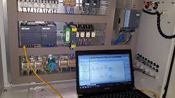
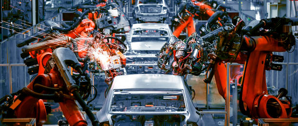
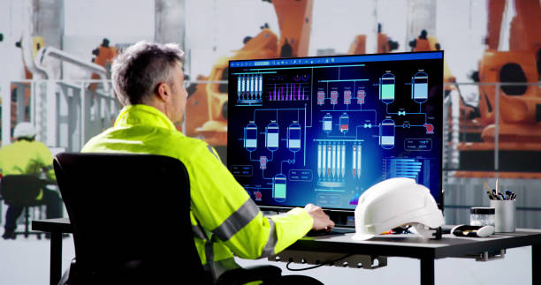
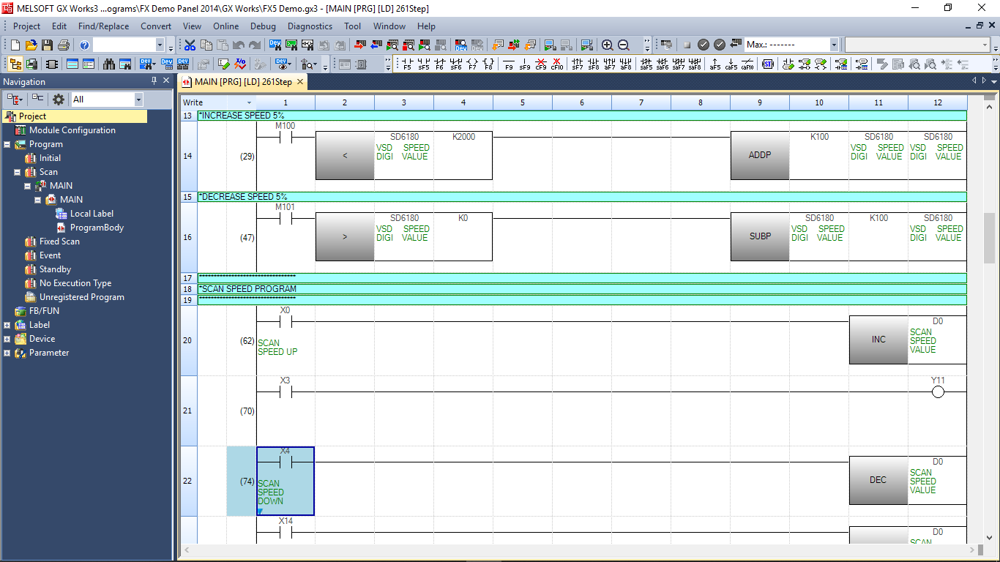
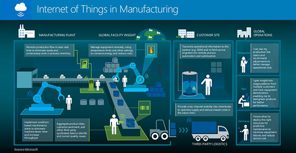
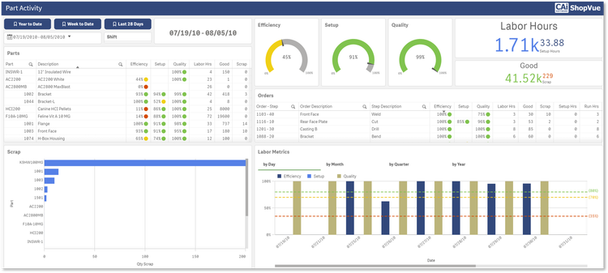

Tipos de Programadores na Indústria
Com o advento da Indústria 4.0, houve um aumento significativo no desenvolvimento de equipamentos e programas especializados voltados para a automação de processos produtivos.Estes avanços tornaram indispensável que os programadores dominem as ferramentas tecnológicas do setor. Esta nova jereção de programadores turnaram-se isenciais no ambiente industrial, esses proficionais capazes de operar com diferentes tipos de equipamentos e atuarem diversas áreas e são capazes de atender às demandas dinâmicas da indústria moderna de forma eficiente, inovativa e alta precisão. "Os programadores que atuam nesses setores são os seguintes:"
Programadores de Automação Industrial
-
Programadores de PLC:
Especialistas em programação de equipamentos industriais atraves dos (CLPs) e (IHM) para otimizar e automatizar máquinas industriais e linhas de produção.

-
Programador de robôs:
Especialistas em programação de uma ou varias gamas de robos industriais que utilisão os seus proprios programas. Além disso, colaboram estreitamente com programadores de PLC em projetos de linhas de produção ou maquinas industriais. Isso é crucial para otimizar tarefas repetitivas e fisicamente exigentes, garantindo eficiência e precisão no processo produtivo.

-
Programadores SCADA:
Especialistas em supervisão e coleção de dados, eles desenvolvem sistemas que monitorizam e controlam processos produtivos em tempo real.

-
Programadores de Sistemas Embarcados:
São responsáveis por criar programas que conectam o hardware de máquinas industriais ao software necessário para seu funcionamento. Por exempolo Twincat 3, GW Works 3

-
Industrial IoT Developers:
Focados na integração da Internet das Coisas (IoT) com os processos industriais, eles conectam dispositivos para melhorar a comunicação e a eficiência na linha de produção.

-
MES Developers:
Estes desenvolvedores monitorizam e otimizam a execução de processos produtivos, integrando equipamentos e sistemas de gestão para garantir fluidez e eficiência na manufatura.
